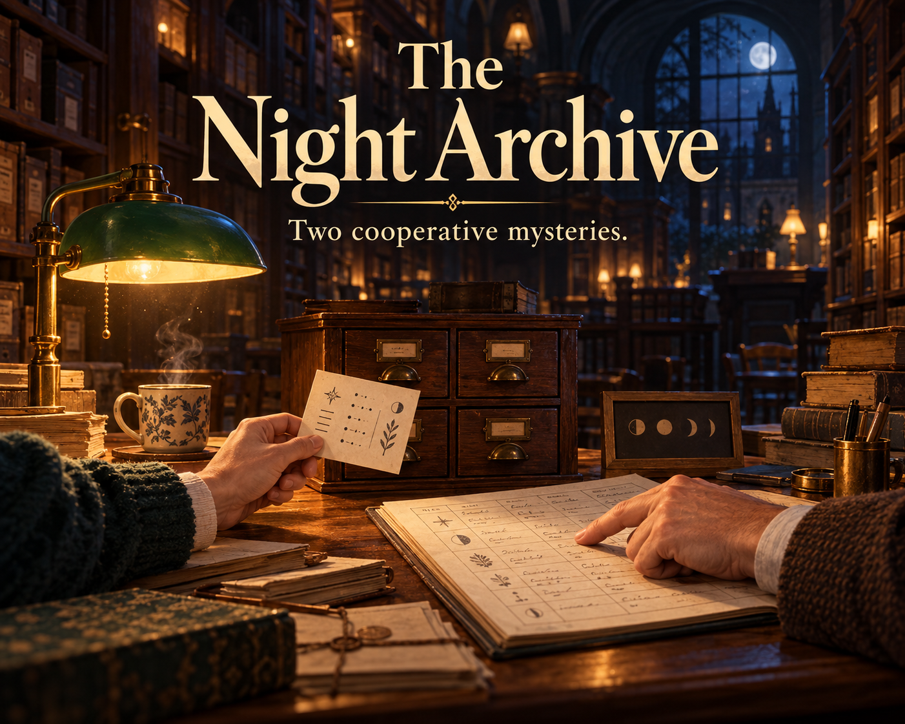

The Night Archive
Two cooperative mysteries.

One record each. A task to finish together.
After closing time, follow a map through three shelf swaps. Read separate cards, share what you know, and find where it belongs. Play this first case through its answer and complete ending, free.
Finish the night at the archive
The full collection contains this first case and a second mystery: restore four indicators using a copied record and a separate set of rules. English and Japanese HTML, plus an English 10-page print PDF, contain the same two short cases. Personal noncommercial play; no previous purchase needed.
See the two-case collection · US$3 minimum
HTML needs JavaScript in a current desktop browser. One device is enough. Phone file-viewer support varies, so try the browser case first.